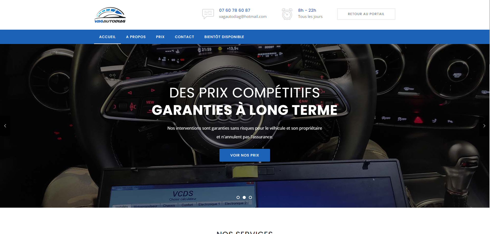
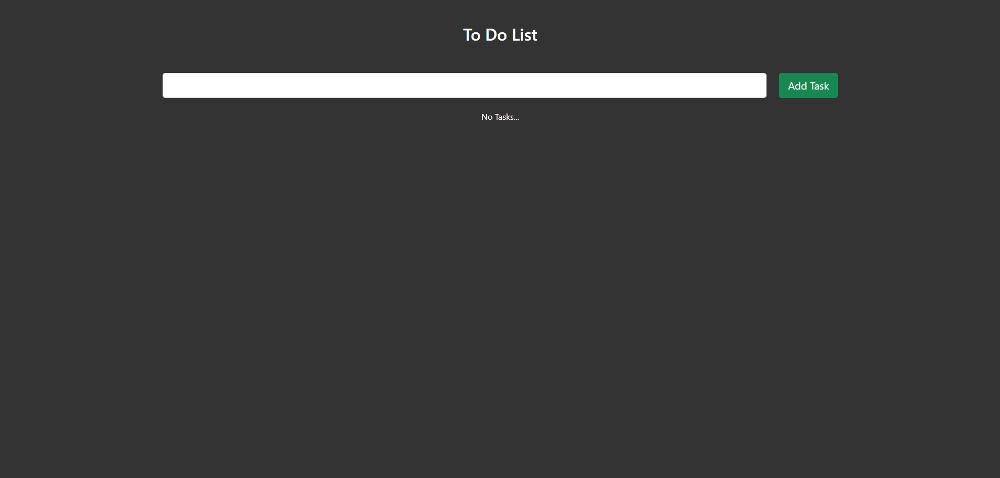
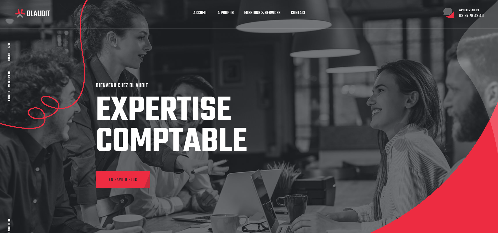
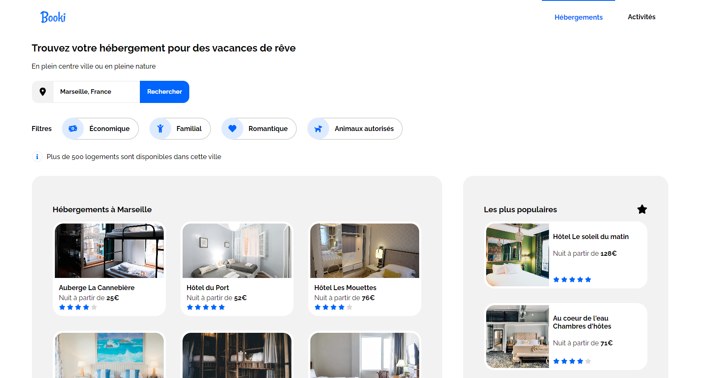
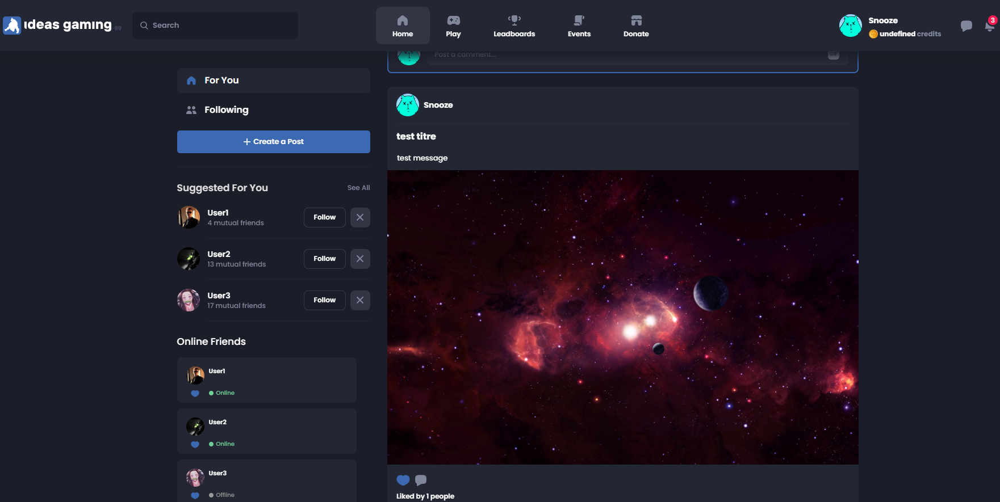

Présentation
Développeur Junior en autodidacte, je me suis formé sur le web à ces technologies: HTML, CSS, JavaScript, React, TailWind, NodeJs.
Passioné de musique electro-urbaine (Je suis ingénieur du son studio de base) et un peu de design à mes heures perdues (Illustrator, Spline)
Projet 1 : Vagautodiag.fr
Vagautodiag est l'entreprise d'un ami qui fait des diagnostiques automobiles. Je lui ai fait son site avec un cahier des charges relativement faible.
Technologie(s): HTML, CSS, JavaScript.
Projet 2 : To do list
Ce projet est une initiative personnelle, qui a pour but de travailler le système "CRUD".
Il s'agit du principe de base d'une application web: Create, Read, Update, Delete
Technologie(s): ReactJS, Bootstrap.
Projet 3 : DL Audit
Un ami m'avait demandé de faire le site vitrine de l'agence d'audit de son père, l'offre est toujours en cours...
Il s'agit d'une proposition faite de mon propre chef
Technologie(s): HTML, CSS, JavaScript.
Projet 4 : Maquette/Intégration Web
Voici un projet d'intégration web à partir d'une maquette PNG...
Technologie(s): HTML, CSS.
Projet 5 : Réseau Social
Un projet réalisé à la base pour une commaunté Esport finalement abandonné en cours de route...
Il reprend le système CRUD dans son entièreté ainsi que la gestion d'adminitrateur via la plateforme Steam
Technologie(s): ReactJS, CSS, Node/ExpressJS, FireBase/FireStore.